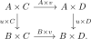

5.6. Products of acyclic classes
Given two ideals \(I\) and \(J\) in a commutative ring \(R\), we may form their product \(IJ \subseteq R\), the ideal generated by the products \(ij\) for \(i\in I\) and \(j \in J\). There is an analogous construction for classes of morphisms in a topos. Its natural domain is the partially ordered set \(\Acyc(T)\) of acyclic classes, rather than only the smaller collection of modalities.
5.6.1. The acyclic product
For \(u\colon A \to B\) and \(v\colon C \to D\), the pushout product
is the cogap map of the commutative square

We already encountered this operation before in Notation 5.15.
For acyclic classes \(K\) and \(L\), define their product as the acyclic class
where \(K \ssquare L\) is the class of morphisms of the form \(u \ssquare v\) for \(u \in K\) and \(v \in L\).
We have an inclusion \(KL \subseteq K \cap L\).
Proof
By definition, \(KL\) is again an acyclic class. If \(K\) and \(L\) are of small generation, the following lemma shows that their product is of small generation as well and hence defines a modality.
Given two classes of maps \(\Sigma,\Sigma'\) in \(T\), we have \(\Sigma^m\,{\Sigma'}^m \;=\; (\Sigma \ssquare \Sigma')^m\). In particular, if \(K\) and \(L\) are acyclic classes of small generation, then so is \(KL\).
Proof
Proposition 5.75. ([Anel et al. 2025, Theorem 3.2.2])
This product turns \(\Acyc(T)\) into a commutative algebra object in the category \(\Pos^{\cocompl}\) of cocomplete posets. Its unit is the acyclic class \(\All\) of all morphisms.
Let \(K\) and \(L\) be monogenic acyclic classes. Then \(KL\) is monogenic. If \(K\) and \(L\) are of small generation, then so is \(KL\).
Proof
Let \(K\) be a monogenic acyclic class. Then \(K^2 = K\).
Proof
5.6.2. Examples and division
We now discuss various examples of products of acyclic classes.
Let \(L=\Conn_n\) be the \(n\)-connected maps. As a modality this is generated by the constant map \(S^{n+1}\to *\) in \(T\). The pushout product of \(S^{n+1} \to *\) with \(S^{m+1} \to *\) is \(S^{n+m+3} \to *\), so by Lemma 5.74 we get
As a special case, for \(\EffEpi = (S^0 \to *)^{m}\) we get \(\Conn_n = \EffEpi^{\,n+2}\).
More generally, note that for any morphism \(u\colon X \to Y\), the pushout product \((S^0\to *) \ssquare u\) is the codiagonal \(\nabla_u\colon Y \sqcup_X Y \to Y\). It follows that for every acyclic class \(L\) we have
For any topos \(T\), one has \(\Epi^{\,2} \subseteq \Conn_{\infty}\). Indeed, recall from Proposition 5.9 that every epimorphism is \(0\)-connected, so that
We claim that we also have an inclusion \(\Epi \cap \Conn_1 \subseteq \Conn_{\infty}\). Indeed, if \(f\colon X \to Y\) is an epimorphism, then we get a pushout square
If \(f \in \Conn_n\) for some \(n\), then \(\Delta_f \in \Conn_{n-1}\). The relative pushout product \(\Delta_f \ssquare_X \Delta_f\) is a base change of the ordinary pushout product, hence belongs to
Since the gap map of this square is \(f\), Blakers–Massey implies that \(f \in \Conn_{2n}\). Assuming \(f \in \Conn_1\), it follows inductively that \(f \in \Conn_{2^k}\) for all \(k\), so \(f \in \Conn_{\infty}\).
Given acyclic classes \(K\) and \(L\), we define
This is again an acyclic class by [Anel et al. 2025, Lemma 3.1.2 and Theorem 3.2.2]. If \(M\) is a third acyclic class, then we have
so that \(K\backslash L\) functions as an internal hom in \(\Acyc(T)\).
Since \((S^0\to *) \ssquare u = \nabla(u)\), we see that \(u \in \EffEpi \backslash \Iso\) if and only if \(u\) is an epimorphism. More generally, we inductively get
5.6.3. Products of congruences
We now show that the acyclic product of two congruences is again a congruence. The following is the key input.
Lemma 5.82. (Key lemma, [Anel et al. 2025, Lemmas 2.3.27 and 2.3.28])
Let \(L\) be an acyclic class.
\(\Delta \nabla(L) \subseteq L\).
\(\Delta^{-1}(L) \cap \EffEpi \subseteq \EffEpi \cdot L\).
Proof

Corollary 5.83. ([Anel et al. 2025, Theorem 2.3.22])
For any acyclic class \(L\), we have
In particular, if \(K\) is a congruence we get
Proof
We now prove that the product of two congruences is again a congruence.
Let \(K, L \in \Cong(T)\) be congruences. Then their product \(KL\) is also a congruence.
Proof
References
- Mathieu Anel, Georg Biedermann, Eric Finster, André Joyal. Left-exact localizations of $\infty$-topoi III: The acyclic product. 2025.